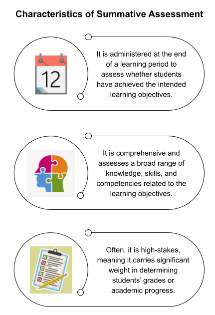
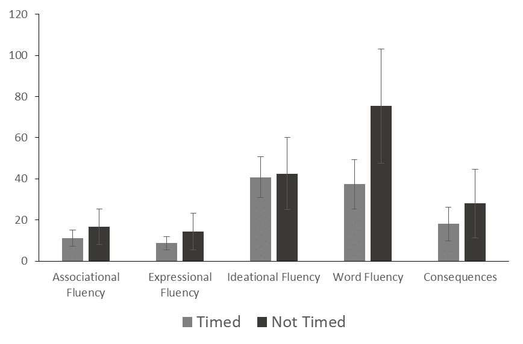

Summative Assessment
This site is still under development. Thank you for previewing it! Your feedback is much appreciated – Let us know what you think!
TODO: (1) insert vignette videos from Sarah K, (2) write LOs, (3) revise summary, (4) revise framework section?, (5) make inclusive section more concise, (6) add rubric
Module Learning Objectives
By the end of this module, you will be able to...
- Define summative assessment, including its purpose, characteristics, and when it is typically used in the learning process.
- Describe the role of summative assessments in evaluating student learning and informing teaching practice.
- Describe how different summative assessment techniques gather different information about a student’s learning.
- Identify practices that enhance equity in the design of summative assessments, including guidelines for accessibility and Universal Design.
- Develop a comprehensive summative assessment plan that addresses the skills and knowledge of the course.
- Describe the importance of using rubrics to evaluate summative assessments and support student learning.
Summative Assessment Defined
Summative assessments are evaluations conducted at the end of a learning period to determine a student’s overall understanding and development of expertise. As seen in the backward design process, summative assessments measure how well students met the learning objectives.
Unlike formative assessments, which are ongoing and provide feedback during the learning process, summative assessments are typically administered after a unit has been completed to provide a summary of a student’s learning progress and achievement.
Examples of summative assessments include:
- Comprehensive tests (e.g., quizzes and exams)
- Research papers, essays, and lab reports
- Projects
- Presentations
- Performance assessments (e.g., demonstrating aseptic technique during a lab practical)

Identify Formative and Summative Assessments
Match each statement below to the type of assessment it is most characteristic of, formative assessment or summative assessment:
- Administration: flexible and through a variety of methods such as quizzes, discussions, observations, or informal assessments
- Administration: under standardized conditions with specific guidelines for administration, scoring, and reporting
- Feedback: is immediate or ongoing, which allows for adjustments to learning strategies
- Feedback: is provided to students and instructors, but the feedback is focused on assessing a student’s overall achievement
- Focus: on the outcomes of learning and understanding of the materials
- Focus: on the process of learning, encouraging students to reflect on their progress and take ownership of their learning
- Purpose: to provide ongoing feedback on student learning to students and teachers
- Purpose: to evaluate students’ overall understanding and achievement on established learning objectives
- Stakes: often high
- Stakes: often none or low
- Timing: conducted at the end of a learning period
- Timing: conducted throughout the learning process, often on a regular basis
Why Summative Assessment
Summative assessments play a multifaceted role beyond merely assigning grades to students. They serve as invaluable tools for evaluating student learning and providing feedback to both learners and instructors.
From the scientific teaching perspective, these assessments provide instructors essential data to gauge the extent to which students have met predefined objectives as well as identifying areas where additional support may be required. As a scientific instructor, collecting and analyzing this data is crucial in refining your teaching practice (Ebert-May, Batzli, & Lim, 2003) and is aligned with calls to teach science the same way it is practiced (AAAS 1990, Annenberg/CPB 1997, NRC 1997, 1999, Bransford et al. 1999, Pellegrino et al. 2001, Cech 2003).
Like a scientist uses data to evaluate their hypotheses, a scientific instructor uses assessment data to evaluate their instructional practice. And given the importance of engaging students in scientific practices to equip them for future careers in science, summative assessments need to extend beyond evaluation of content knowledge and assess competencies expected for aspiring science practitioners.
Furthermore, summative assessments serve as pivotal milestones in a course’s trajectory, marking significant targets for students to strive toward. They hold students accountable for their learning and represent indicators of their increasing expertise and competence in the subject matter.
Feedback from summative assessments aids students in refining their study strategies and preparing for subsequent evaluations, thus facilitating ongoing growth and improvement. Engaging in summative assessments and their feedback equips students for future careers and/or for graduate school. For example, writing lab reports helps students practice communicating what they learned and explaining research findings—both valuable skills for science practitioners.
A Framework for Summative Assessment
You already have the frameworks!
Recall that when we leverage backward design, we:
- Craft learning objectives
- Articulate what evidence would indicate competency or accomplishment of the learning objectives.
- Those pieces of evidence will provide the basis for you to plan the summative assessments that will punctuate and reinforce the rest of the learning experiences in your STEM course.
When considering summative assessments, we are concerned with the second point, articulating evidence of accomplishment.
Some aspects of summative assessment to consider when designing them include:
- How do they assess the intended learning outcomes?
- How do they support the facets of science?
- How do they fit into learning?
- How do they manifest universal design principles?
- Which summative assessments are connected to grades, and how?
- At what point(s) will they punctuate the course?
- What type, frequency, etc.?
Summative Assessment in Practice
Summative assessments are a critical component of course design, but what techniques should you incorporate?
How you choose which assessment technique to use is dependent on the information you are trying to gather. Different summative assessments gather different information about a student’s learning by focusing on various aspects of their knowledge, skills, and abilities.
Each strategy also varies in how broadly/deeply knowledge is assessed, its objectivity, the amount of time/resources it takes to administer and grade, and whether it adds additional performance anxiety to the student.
By using a variety of assessment methods, instructors can gain a more comprehensive understanding of a student’s strengths and areas for improvement.
Summative Assessment Techniques
Table 1. How/Why to Use Common Summative Assessment Techniques
| Tests (e.g., quizzes and exams) |
|
|---|---|
| Research papers, essays, lab reports |
|
| Projects |
|
| Presentations |
|
| Performance assessments |
|
Facets of Science
Reflecting on backward design, your assessments need to be aligned to the learning objectives of the unit. These learning objectives are ultimately aligned with the learning goals of the course. Therefore, the summative assessment techniques chosen for your course should be informed by what skills and knowledge students need to exhibit competence for your course. In addition, summative assessments are a space for students to demonstrate the facets of science.
Let’s look at some examples how different summative assessment techniques assess various skills—which align with six facets of science—in a science communication course.
- Research papers assess skills in data analysis and visualization, which is a Scientific Practice
- Group projects assess collaboration and project management, which is a part of Authenticity and Ownership
- Individual student presentations assess communication skills, which is a Scientific Practice and part of Relevance
Summative Assessment Plan
Now let’s think about your course. How do you want students to demonstrate understanding of the various skills, knowledge, and competencies? In what ways can they demonstrate scientific skills and bring science to life? As the instructor, you have agency to choose how to structure the course’s summative assessment plan.
For example, here are four different summative assessment plans:
Click for a Traditional Exam-Based Example
- Weekly quizzes
- 3 midterm exams
- Final exam
Click for a Writing-Centric Example
- Weekly short answer quizzes
- 4 self-reflection essays
- Final research paper (scaffolded sections due every 2 weeks)
Click for a Project-Based Example
- Weekly quizzes
- Group project: proposal, presentation, report
- Individual self-reflection essay
Click for a Performance-Based Example
- Daily pre-lab quizzes
- 3 lab reports
- 4 lab practicals
- Independent project: proposal, presentation, report
Notice that all the summative assessment plans utilize more than one kind of summative assessment technique except the Traditional Exam-Based plan, which only uses tests. Remember that tests can only assess specific types of knowledge and skills. Thus, a well-designed summative assessment plan includes diverse techniques to capture the different aspects of student knowledge and understanding.
Additionally, well-designed summative assessment plans have a high number of summative assessment opportunities. For example, all of the plans administer weekly or daily quizzes instead of just a few during the whole semester. This way, lower performance on one assessment doesn’t devastate a student's grade and they have multiple opportunities to demonstrate their knowledge and abilities.
Designing with Professor Pham
Professor Pham is designing an assessment plan for their medical microbiology case studies course. As learning goals for the course, Professor Pham wants all their students to develop skills in collecting and organizing information, communication, and creative thinking as well as understand how microorganisms impact human health and society. Presentations are an excellent medium to assess these competencies.
How could Professor Pham design the presentation assignment to align with facets of science? For example, to target Discovery, the presentation must address potential biases and stereotypes in medical history and reflect on the importance of diversity and inclusion in microbiology research.
Align Assessments, Objectives, and Facets
Answer in your workbook:
Decide which summative assessment techniques you will use in your classroom.
How do they align with the knowledge, skills, and competencies for your course?
How are students demonstrating facets of science?
Rubrics
All summative assessments need to be evaluated in a way that’s standardized and consistent across student work. Rubrics are a tool that can achieve this goal by providing a detailed description of the criteria and standards used to assess student performance. Without rubrics, assessments can be subjective and biased, leading to unfair grading and lack of clarity for students. Rubrics also help instructors identify areas where students need improvement, which can provide specific, targeted support and inform instruction.
To write a rubric, first establish clear and specific criteria that outline the expectations for student performance. What do students need to do to achieve a particular grade? Grading criteria may include elements such as content knowledge, organization, critical thinking, and creativity.
Using your grading criteria, design a rubric. This typically consists of a grid or chart that outlines the specific criteria for success, along with descriptions of different levels of performance for each criterion (e.g., developing, proficient, and excellent). Rubrics help instructors assess student work systematically and consistently, providing feedback that is aligned with the established criteria.
INSERT EXAMPLE OF A PROPER RUBRIC OR A LINK TO PROPER RUBRIC (TK)
Figure A. EXAMPLE OF A PROPER RUBRIC
To support student learning, we strongly advise instructors to share rubrics with students prior to the assessment. Rubrics provide transparency and clarity to students about what is expected of them and how their work will be evaluated. Additionally, rubrics allow students to monitor their progress and make improvements based on the established criteria.
Designing with Dr. Kane
Dr. Kane has assigned students to write a lab report on an enzyme assay. She has also provided students with the following rubric:
Table 2. Dr. Kane's Rubric
| Points | Criteria |
|---|---|
| 40 | Content: Is the lab report well-written and informative? |
| 35 | Grammar: Are there any spelling, grammatical, or punctuation errors? |
| 25 | Format: Is the paper double-spaced? Is the font Arial and 12-point? Are figure captions after figures and table captions before tables? Is every paragraph indented? Are section headers title case and bold? |
Using the following prompts, provide a critique of the rubric:
- Are the assessment criteria clear?
- Are guidelines for assigning points clear and specific?
- What aspects of the lab report does the rubric emphasize as most important, and are these priorities justified in the context of the assignment?
Inclusive Summative Assessments
Given the significant influence of summative assessment outcomes on students and their grades, which can have a direct impact on scholarship, university admissions, and career opportunities, it is essential to design summative assessments that are equitable, accurate, and fair in their evaluation of student knowledge. The Standards for Educational and Psychological Testing provide principles to establish fairness in testing (American Educational Research Association, 1999):
- All test takers have access to materials and opportunities to learn
- All test takers receive fair and equitable treatment during tests
- Biases are removed from the assessment and in evaluation of the student’s work
Additionally, Kibble (2017) recommends instructors practice these elements to produce high-quality and equitable assessments:
- Ask instructional staff and colleagues to review assessments for construct underrepresentation (e.g., too few items on a construct, inclusion of trivial items) and construct irrelevant variance (e.g., items that are too hard/ easy, contain trivial details, are culturally insensitive).
- Include enough, high-quality items that provide a reliable and accurate picture of students’ knowledge, skills, and abilities.
- Provide clear instructions and practice materials to students.
The principles and elements outlined above are crucial for ensuring that all students have an equal opportunity to showcase their knowledge and understanding on assessments that accurately measure their abilities. While these principles may seem intuitive, it’s essential to delve deeper into the evidence-based strategies instructors can employ to design assessments that promote equity and accuracy. By doing so, educators can create a fair and inclusive assessment environment that values the diverse strengths and abilities of all students.
Accessibility and Universal Design
Designing assessments with accessibility and Universal Design at the forefront fosters equity, inclusion, and enhanced learning outcomes. By accommodating diverse learners’ needs and preferences, assessments become a tool for providing equal opportunities for all students to demonstrate their knowledge and skills. In addition, instructors have a moral and ethical responsibility to comply with disability rights legislation and provide student accommodations to ensure access to educational materials and assessments. Meeting the following principles will improve the accessibility of your assessments:
- Communicate the purpose, format, and expectations of the assessment
- Provide closed captions, transcripts, and audio descriptions for videos and audio clips
- Use alternative text for images
- Use high contrast colors between the background and text
- Ensure images are colorblind friendly
- Ensure that the assessment is compatible with popular screen readers (e.g., JAWS, VoiceOver)
- Administer exams without a time limit
- Use clear and concise language, and limit jargon
- Avoid complex formatting
Exams without Time Limits
In reviewing these accessibility principles, administering exams without a time limit might have jumped out at you.
Timed tests are a staple in educational settings, but what does the literature have to say about it? Time-limited tests are less valid, reliable, inclusive, and equitable than tests in which there is no time limit or a time limit that’s so generous all students can complete all items (Gernsbacher et al., 2020).
Test-taking pace is not a valid measure of student understanding. Students who need additional test-taking times are literally excluded from the test-taking classroom. Timed tests restrict students who are learning English, from underrepresented backgrounds, older than average, and students with disabilities who face barriers obtaining accommodations.
Research shows that most students who do receive additional time on tests do not use all of it (Cahalan-Laitusis, King, Cline, & Bridgeman, 2006; Holmes & Silvestri, 2019; Spenceley & Wheeler, 2016). Gernsbacher speculates that these students are actually requesting to not experience the anxiety and pressure of running out of time (2015). When time limits are removed from exams, numerous studies have shown that student performance improves across student groups including those who are learning English, from underrepresented backgrounds, older than average, and females (De Paoloa & Gioia, 2015; Foos & Boone, 2008; Mullane & McKelvie, 2001). Consider administering untimed asynchronous tests such as take-home exams or untimed online exams and designing test questions that aren’t easily searchable.

Designing Summative Assessments for Equity
As we saw in Course Design, incorporating Universal Design principles into course materials not only benefits students with disabilities but also enhances learning experiences for all learners. Here’s how you can use UDL principles in the context of summative assessments:
- Provide multiple means of representation
- Offer different formats for presenting information
- Visual: images, diagrams, charts, and graphs
- Auditory: audio recordings, podcasts, and videos
- Text-based: written text, transcripts, and summaries
- Offer different formats for presenting information
- Provide multiple means of action and expression
- Allow students to demonstrate their knowledge and skills through various methods
- Writing: papers (research, essay, lab reports) and free-response answers
- Speaking: oral presentations, debates, and discussions
- Creating: multimedia projects
- Allow students to demonstrate their knowledge and skills through various methods
- Provide multiple means of engagement
- Incorporate features that motivate and engage students
- Authentic tasks: use real-world problems that reflect students’ interests and experiences
- Cultural relevance: incorporate diverse perspectives, cultures, examples, and scenarios
- Choice and autonomy: allow students to choose topics, formats, or pace
- Provide regular feedback and progress monitoring
- Incorporate features that motivate and engage students
Reduce Stereotype Threat
As we saw in the Inclusive Learning module, stereotype threat is a psychological phenomenon that refers to the feeling of anxiety or self-doubt that individuals experience when they are in a situation where they are at risk of being judged or evaluated based on a negative stereotype about their group (Steele, Spencer, & Aronson, 2002).
This can lead to a decrease in performance and motivation, as individuals may feel like they are being held to a lower standard or that they are being judged based on their group membership rather than their individual abilities.
Research has shown that activating stereotype threat can significantly affect performance in various contexts:
- A study that asked about participants’ race immediately before an exam resulted in decreased performance for Black students whereas White students were unaffected (Steele & Aronson, 1995).
- Black students performed worse than White students on a verbal section of the Graduate Record Exam (GRE) when it was described as diagnostic of intellectual ability. When the test was not labeled as such, both groups performed equally well.
- Students from lower socioeconomic backgrounds underperformed on the same GRE section compared to students from more affluent backgrounds when financial status was mentioned. When affluence was not mentioned, both groups performed the same.
- Women performed worse than men on a math test when it was described as producing gender differences. However, when the test was described as not producing gender differences, women and men performed equally well.
Students deserve the opportunity to engage with an assessment to the best of their ability without being impeded by stereotype threats, biases, or assumptions. To achieve this, it is therefore crucial that summative assessments are designed and conducted in a way that minimizes the activation of stereotype threat. We recommend instructors follow these practices:
- Frame assessments as opportunities to learn and demonstrate progress rather than as high-stakes evaluations. Do not frame exams or quizzes as definitive judgments of a student's intelligence or abilities.
- Provide practice exams or low-stakes quizzes to help students become familiar with the testing format and reduce anxiety.
- Teach stress-reduction techniques, such as deep breathing or mindfulness exercises, before exams.
- Write inclusive test questions, and include diverse and inclusive examples and scenarios.
- Ensure that test materials, such as images or scenarios, do not perpetuate negative stereotypes or biases.
- Solicit demographic information after exams, not before (Kumar, 2010).
Commit to Action: Equitable Summative Assessments
Answer in your workbook:
What is one concrete action you can take to make the design of your summative assessments more equitable?
Equitable Grading
Traditional grading is the practice of assigning numerical points to one-time assessments and aggregating those points into a single letter grade for the course (Clark & Talbert, 2023). In addition, there are usually no reattempts or revisions of work, so students are unable to apply feedback received on a new attempt (Clark & Talbert, 2023). Overall, traditional grading penalizes students who have received unequal opportunities and discourages growth and learning.
Incorporating more equitable grading practices promotes a more just and inclusive educational environment that supports the success of all students. Below are some equitable grading practices you can implement in your course.
In providing feedback:
- Ensure it is constructive, focusing on strengths and areas for improvement. Specific and actionable feedback can help students understand their performance and make meaningful progress towards developing expertise.
- Locate it separately from the grade or points
- Make sure it is timely so that students are not waiting or guessing
Ensure your grading policy is transparent:
- Communicate the criteria and standards used to evaluate performance
- Communicate how grades are assigned
- Provide rubrics, standards, or expectations
Do not apply grading curves:
- Curves are not transparent and make it difficult for students to determine grades
- They are inconsistent and unfair
- Curving grades is the result of misalignment in the course design: instructors need to ask themselves why students are failing exams rather than applying a curve (which “fixes” the symptom but not the underlying issue)
Check your own biases and assumptions:
- Confirmation bias: don’t let existing beliefs about a student bias your grading
- Halo effect: don’t let a first impression of a student bias your grading
- Don’t stereotype students
- Don’t let expectations or assumptions about students affect your grading
- Use your grading data to self-check: did you give males higher scores over females on free-response questions? What about students from historically excluded communities?
Provide opportunities for retesting:
- Allow students to apply what they learned from the assessment feedback to retest for partial or full credit
- Assessment drives learning: give students another opportunity to grow and showcase their knowledge
Alternative Grading Methods
In recent years, there has been a growing movement to move away from traditional grading methods altogether and implement alternative grading methods. Alternative grading shifts the focus from traditional letter grades (A-F) or numerical scores to a more nuanced and detailed assessment of student learning.
Common alternative grading methods include standards-based grading, specifications grading, and ungrading. Briefly:
- Standards-based grading assesses students’ competency of specific skills or knowledge: final grades are based on how many standards a student meets, no matter the number of attempts (Clark & Talbert, 2023).
- In specifications or specs grading, the instructor creates a list of attributes of a successful submission for assignments. Students then earn a “Satisfactory” or “Not Yet” on their work and have the opportunity to resubmit for full credit (Clark & Talbert, 2023).
- Ungrading removes grades in favor of formative and descriptive feedback. Instructors meet regularly with students to discuss progress, and students build a portfolio of their work and growth (Clark & Talbert, 2023).
Instructors who are interested in alternative grading but can’t or aren’t ready to overhaul their course can try partial conversions, such as standards-based testing (i.e., only tests are graded using standards).
Peer-Grading and Self-Assessment
After an assessment is administered, the instructors or teaching assistants will typically be responsible for grading. However, peer-grading and self-assessment can offer several benefits to students and ease the burden of grading on instructional staff.
In peer-grading, students assess and provide feedback on the work of their classmates. This approach allows students to witness a diverse range of perspectives and opinions, which can help students develop a more nuanced understanding of the subject. Peer-grading can also promote collaboration and communication skills, as students work together to share knowledge and insights.
Self-assessment allows students to take ownership of their learning by evaluating their own work and reflecting on their learning, performance, and understanding. This approach can foster a sense of responsibility and accountability, as students are more likely to invest time and effort into their work when they are invested in the outcome. Additionally, self-assessment can provide students with immediate feedback on their performance, which can help them identify areas for improvement, track their progress over time, and develop self-regulation of their learning.
Despite their benefits, peer-grading and self-assessment also have their challenges. With peer-grading, students may not have the same level of expertise, which can lead to inconsistent grading. Self-assessment can also lead to inaccurate grading as students might be too critical/lenient or have subjective opinions when grading their own work. It is therefore essential to establish clear criteria and rubrics for grading and provide training such as examples of high-quality feedback, guidance on using the rubric, and tips for constructive criticism. Instructors should monitor the grading process and spot-check grading to ensure that biases are minimized and fairness is maintained.
Commit to Action: Equitable Grading
Answer in your workbook: What is one concrete action you can take to make the grading in your course more equitable?
Check Alignment
Answer in your workbook: Check the alignment between your summative assessment plan and your inclusive learning commitments, learning objectives, and syllabus. Does anything need to be adjusted?
Summary of Summative Assessment
- Summative assessments are designed to evaluate whether students have achieved the intended learning objectives at the end of a learning period.
- Summative assessments are a valuable tool for evaluating achievement of the established learning objectives and providing feedback to both students and instructors.
- Instructors should use summative assessment data to inform their teaching practice and make adjustments to improve student learning.
- Intentionally choose summative assessments that help you gain a more comprehensive understanding of a student's learning.
- Assessments should measure students' ability to demonstrate scientific skills and bring science to life.
- Rubrics provide detailed descriptions of the criteria and standards used to assess student performance, reducing subjective and biased grading.
- Share the rubric with students so that they know what is expected of them to achieve a particular grade.
- All students deserve the opportunity to demonstrate their knowledge on an accurate and unbiased summative assessment.
- Incorporate principles for fairness, accessibility, and Universal Design into assessment design.
- Practice fair and transparent grading.
- Continually keep your biases and assumptions in check.
- Alternative grading practices are more equitable than traditional grading practices and can be implemented partially.